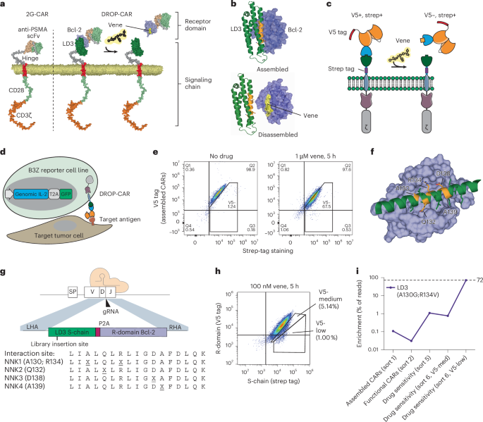
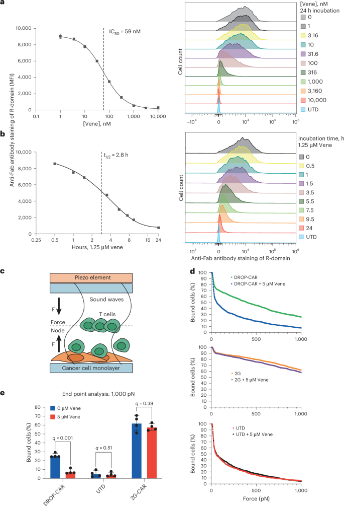
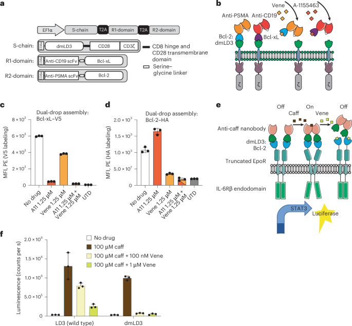
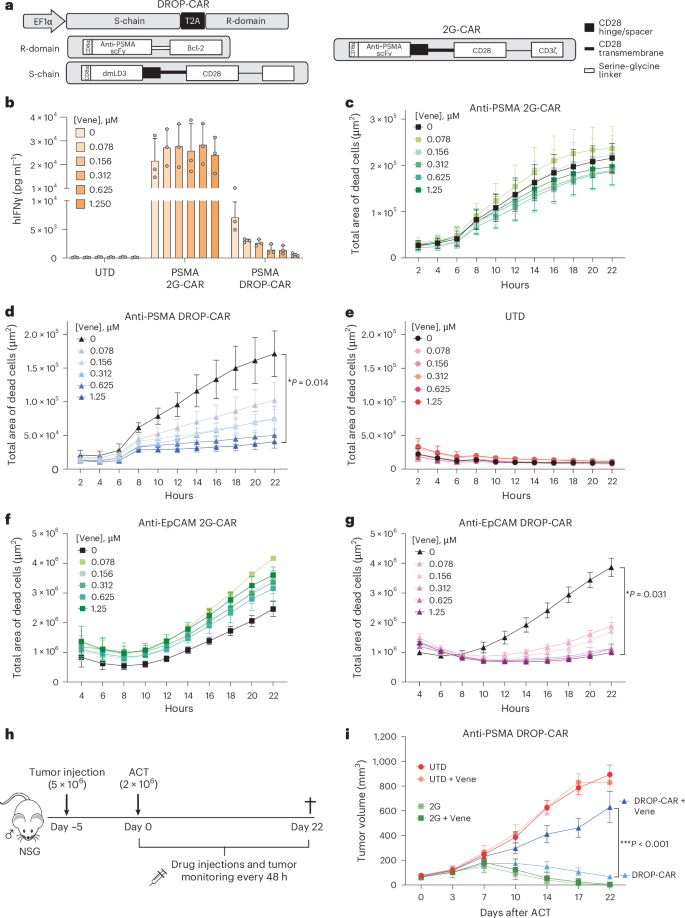
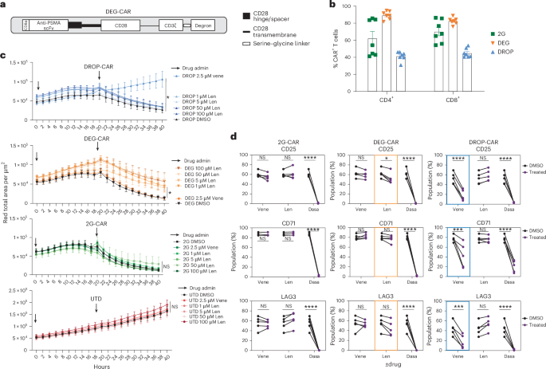
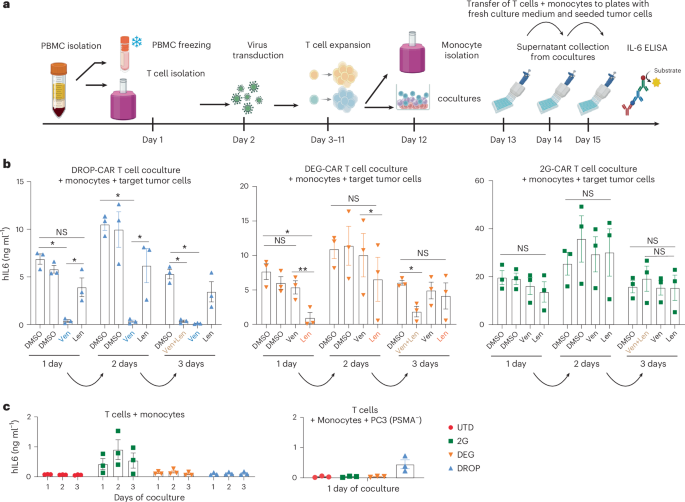

Liệu pháp CAR-T đạt tỷ lệ đáp ứng hoàn toàn cao tại ung thư huyết học nhưng bị cản trở nghiêm trọng khi mở rộng sang khối u rắn bởi bốn thách thức cốt lõi:
Thiết kế DROP-CAR (Drug-Regulated Off-switch PPI-CAR) thỏa mãn đồng thời 5 tiêu chí:
DROP-CAR là thiết kế tách đôi ngoại bào hoàn toàn mới: S-chain xuyên màng (dmLD3 + CD28 + CD3ζ) kết hợp non-covalent với R-domain không xuyên màng (scFv khối u + Bcl-2). Khi venetoclax gắn Bcl-2, PPI bị phá vỡ, R-domain (và scFv) giải phóng khỏi bề mặt tế bào T, triệt tiêu hoàn toàn cầu nối vật lý với khối u.





| Tiêu chí | DROP-CAR +Venetoclax | DEG-CAR +Lenalidomide |
|---|---|---|
| Cơ chế tắt | PPI disruption bề mặt | Proteasome nội bào |
| Tốc độ ức chế | Tức thì, liều thấp | Chậm, liều cao |
| CD25/CD71/LAG3 | Giảm mạnh (p<0.001) | Xu hướng giảm |
| Ức chế CRS (3 ngày) | Hoàn toàn 3/3 ngày | Chỉ ngày 1, mất dần |
| Ảnh hưởng T cell | Venetoclax không ức chế T | Lenalidomide biến đổi T |
| Protein nguồn gốc | 100% từ người (ApoE4) | Người (IKZF3/ZFP91) |

DROP-CAR đại diện cho bước tiến đột phá trong hành trình xây dựng liệu pháp tế bào T điều khiển từ xa — giải quyết đồng thời an toàn, chính xác và linh hoạt thông qua cơ chế hoàn toàn mới: phá vỡ tiếp xúc tế bào trực tiếp bằng thuốc đã phê duyệt lâm sàng, protein 100% từ người.
Tắt CAR theo liều; kiểm soát CRS hoàn toàn 3 ngày liên tiếp; không ức chế T cell bởi venetoclax; rủi ro immunogenicity thấp
IC₅₀=59nM; t½=2.8h; điều chỉnh liều linh hoạt; thuận nghịch hoàn toàn in vivo cả giai đoạn muộn
Venetoclax FDA-approved; uống hàng ngày; transduction ≥40%; tương thích GMP; nồng độ trị liệu đạt >34× IC₅₀
Dual antigen CD19+PSMA; EpCAM xác nhận; AND/NOT logic GEMS; mở rộng SynNotch, degrons và receptor tổng hợp